Mirá esta galería de trabajos que fui desarrollando a lo largo de más de 10 años. Además de algunos trabajos freelance, también hay desarrollo de algunos proyectos hechos para empresas e instituciones, en diferentes momentos.
Audiovisuales
A continuación podrás observar una pequeña parte de los trabajos audiovisuales en lo que he participado como editor y productor. Desde el año 2011 he trabajado para distintas empresas e instituciones gubernamentales en la realización de material audiovisual documental y de ficción. Me especializo en edición no lineal en Adobre Premiere, Edius y DaVinci Resolve.
Gráficos y editoriales
He participado en diferentes proyectos gráficos y editoriales para empresas e instituciones. Además de la creación de piezas gráficas para proyectos editoriales, también se me presentó la oportunidad de realizar trabajos mediante el proceso creativo completo (tanto desde el diseño, pasando por el estudio de mercado, hasta llegar a la implementación del mismo. ¡Te invito a ver algunos!
Fotografía
Buscando flexibilidad a la hora de satisfacer a los clientes, llegamos desde coberturas periodísticas, contrataciones para espectáculos, como así también trabajos para grandes eventos deportivos y artísticos. Todo eso, junto a la tradicional fotografía de producto, para que los clientes tengan sus catálogos de productos actualizados permanentemente.
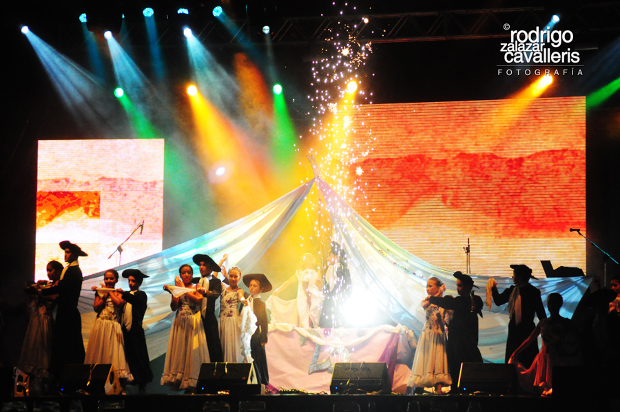
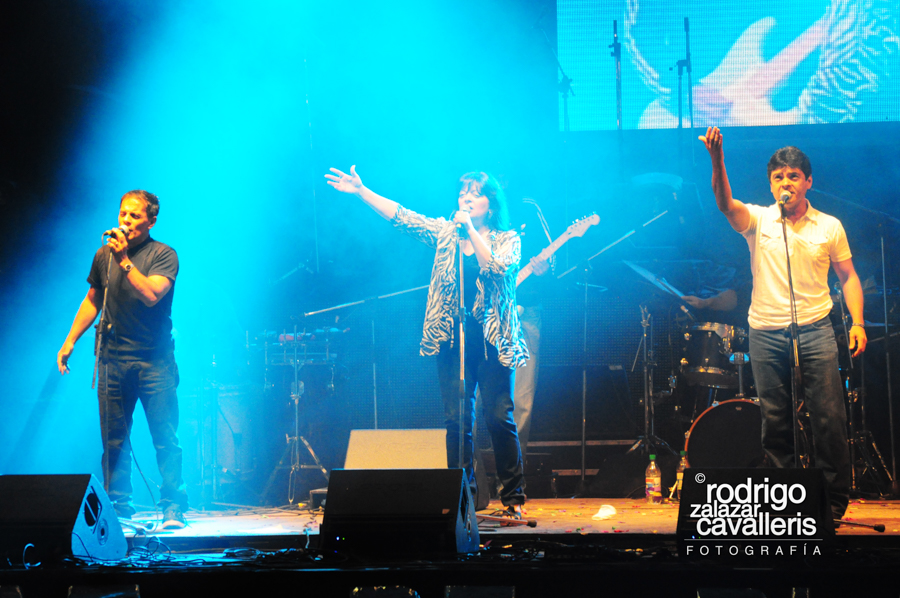
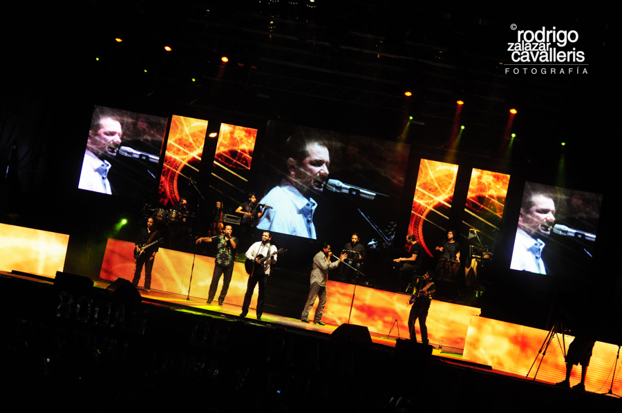
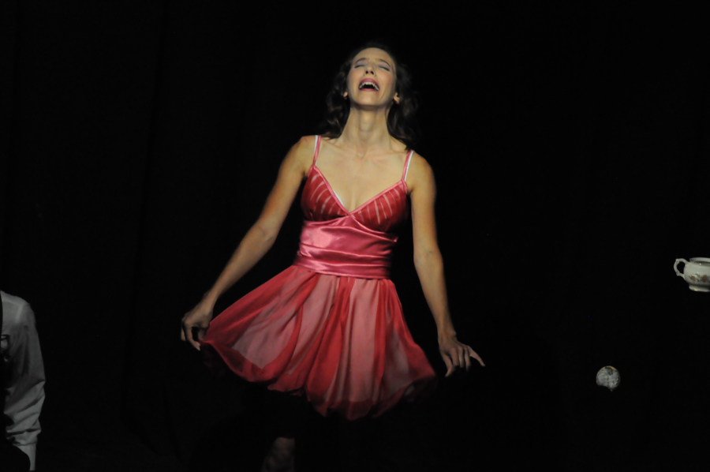
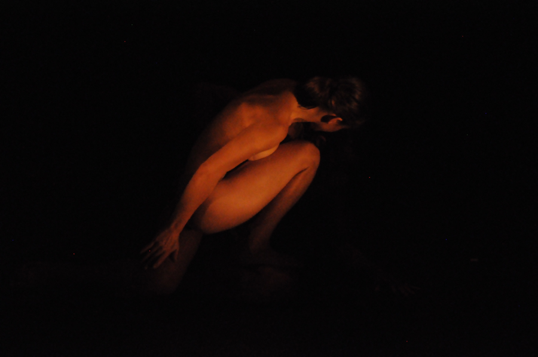
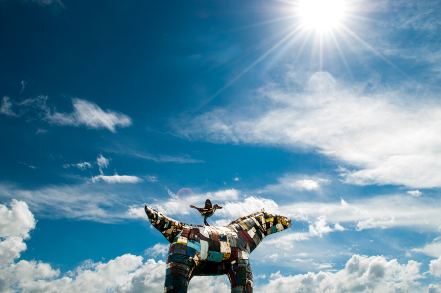
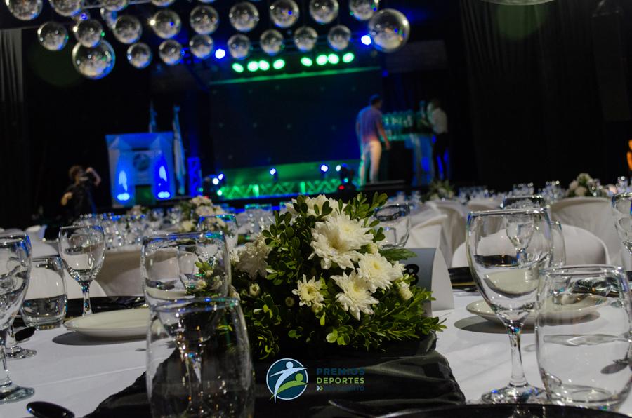
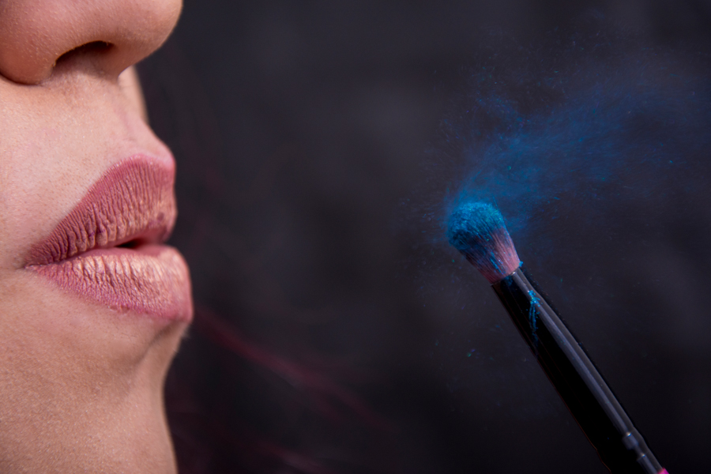
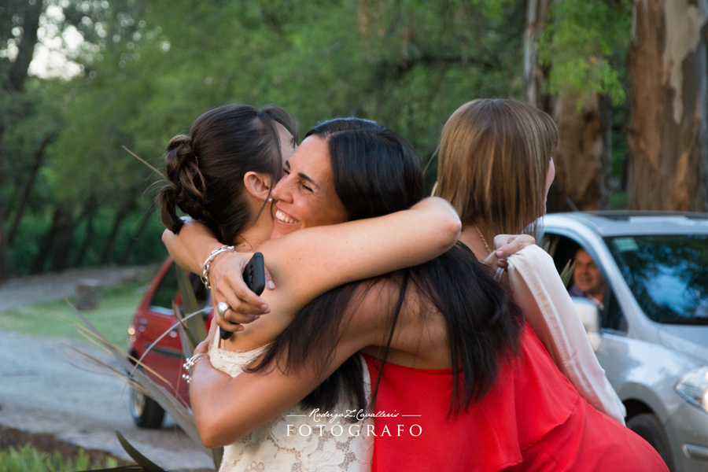
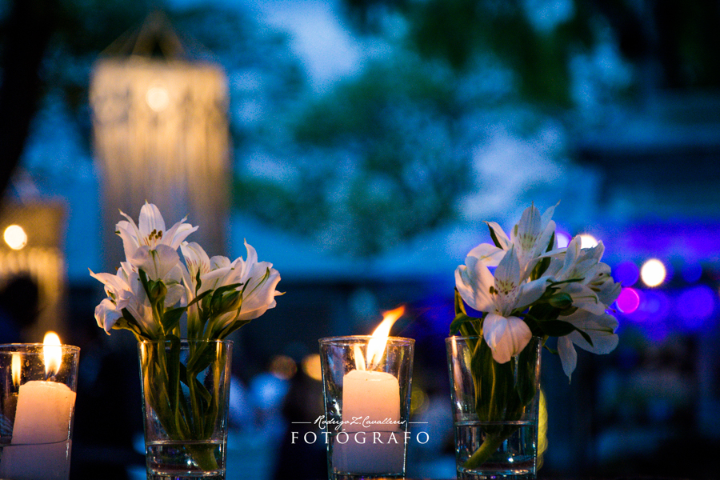
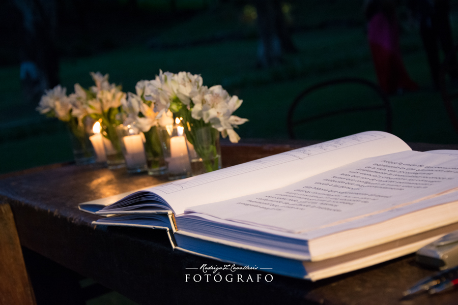
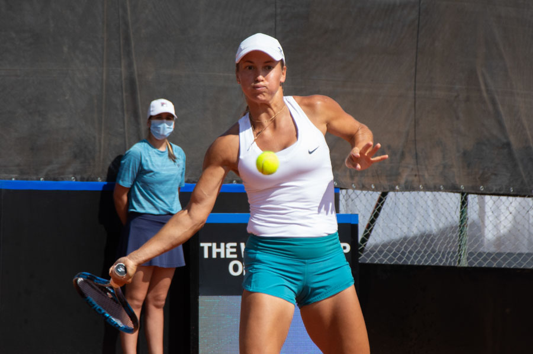
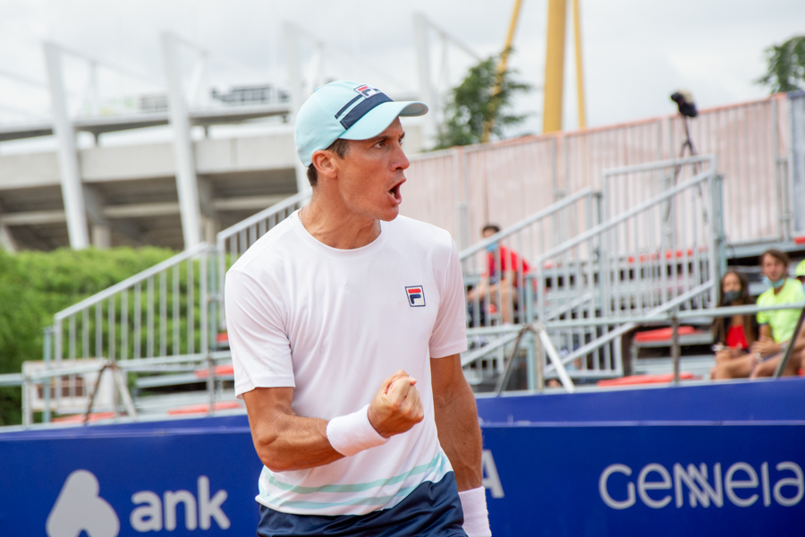
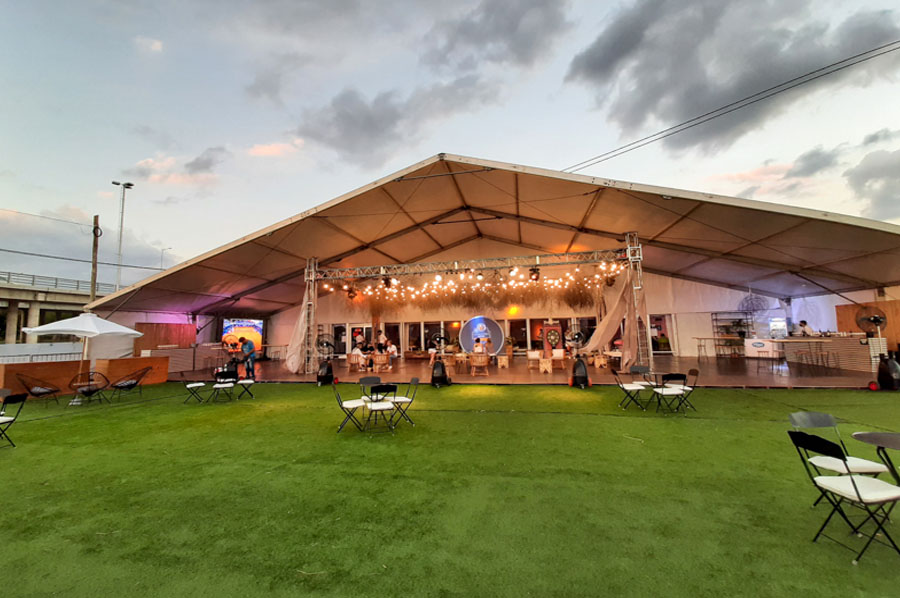
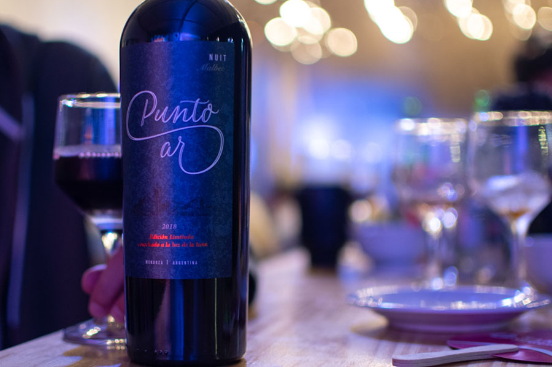
Animaciones
Utilizando After Effects y otras herramientas de Adobe, mirá estas animaciones que se han incoporporado a distintos videos institucionales, como así también a tutoriales. Barridos, animaciones de logos y muchas otras cosas.